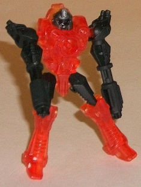
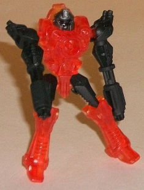
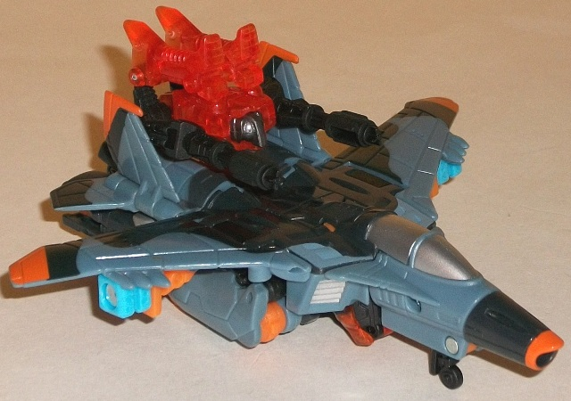
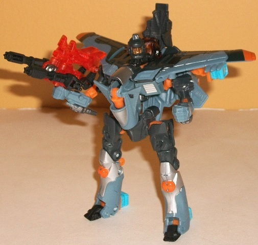
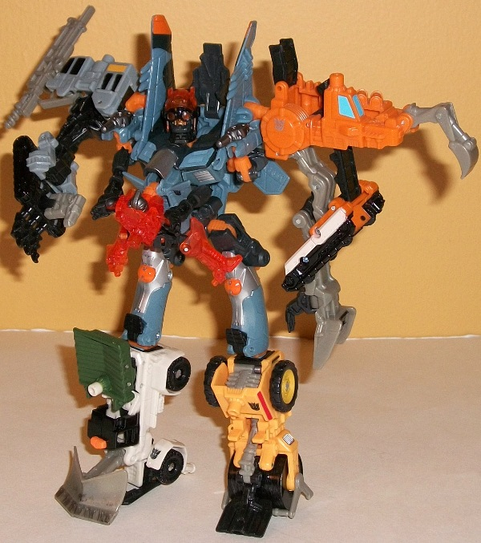

Airlift
Airlift

Allegiance : Minicon
Difficulty of Transformation: Very Easy
Color Scheme : Transparent orange, black, and some dark gunmetal gray
Individual Rating : 5.7
Skyhammer
w/ Airlift
Airlift

Allegiance
: Minicon
Difficulty of Transformation:
Very
Easy
Color Scheme
: Transparent orange,
black, and some dark gunmetal gray
Individual Rating
: 5.7
Airlift's robot mode
is one of the better-looking of the Power Core Minicons, which is saying
something considering the robot modes are usually the focus of these little
transparent guys. In any case, in this mode Airlift has great proportions,
and with his pointed ankles and armored look on his torso and head (which
look sort of like an armored astronaut... if that makes any sense) he comes
across as a sort of evil spacegoer, glowing with fiery power. Speaking
of which, his color scheme of transparent orange and black works well in
that respect, though I wish there was at least a LITTLE bit more color
variation there-- the only paint app Airlift has is the metallic gunmetal
gray "helmet" on his head. Even for a PCC Minicon, that's a bit sparse.
However, Airlift's articulation is quite good for his size-- he can move
at the shoulders, hips, knees, and even at the waist (which also turns
his head at the same time), so you can get him in quite a few cool poses.
His gun-arms don't rotate at the elbows, but honestly that's probably for
the better-- otherwise they'd be more difficult to pose straight in his
other modes.
Both Airlift's vehicle
weapon and robot weapon modes are essentially identical, and very simplistic--
Airlift essentially folds his legs up against his back (or stomach, as
the case may be) and straightens out his arm-guns to point towards whichever
enemy you want him to shoot at. It may not look all that hot, but it gets
the job done, and looks a fair amount like a mounted weapon. Plus his legs
also peg into place instead of just staying in place by mere friction as
they do on most PCC Minicons, which is definitely a good thing. I do think
it's cool that, with the way his waist/legs and head all rotate on the
same piece, you can have either his Minicon port or a Powerlinx port/handle
on his underside with the actual mode not looking any different (though
the head is hidden
slightly
better in the robot weapon mode).
Airlift's chest armor
mode, on the other hand, is just pathetic. It's literally him hugging the
Powerlinx port of whichever larger Power Core Combiner he's attached to.
It doesn't look remotely like anything else, so the less said about this
unfortunate afterthought of a mode, the better.
Airlift's robot mode
is one of the best out of the PCC Minicons and is really well-proportioned
and articulated, and his weapon modes-- while simplistic-- don't look too
unsightly either. His chest armor mode is a disaster, but even despite
that, he's one of the better Power Core Minicons out there.
 Skyhammer
Skyhammer



Allegiance
: Decepticon
Difficulty of Vehicle/Robot Transformation
:
Easy
Difficulty of Torso Transformation:
Easy
Color Scheme
: Dull light blue, dull
dark navy blue, and some light sky blue, silver, transparent orange, metallic
bronze, and light orange
Individual Rating
: 8.3
Skyhammer's vehicle mode
is a fighter jet. In this mode, his proportions are quite good, though
his main wings are a tad on the small side. Unfortunately, like most jet
Transformers, he's got a bit of an undercarriage-- namely, his robot legs.
They're all folded up underneath the silouhette of the jet quite well (with
the exception of the waist, which forms the back end on this mode), so
they're not OVERLY out-of-place, but from a side-on view you can definitely
tell that it's thicker than its supposed to be. However, at least this
mode doesn't rest on his legs-- there's a flip-out landing gear underneath
the nosecone, and little (permanent) landing gear poking out from underneath
the legs to keep Skyhammer level. In addition to the legs as kibble, there's
also two fairly obvious combiner ports underneath Skyhammer's main wings,
though that's not as big of an issue. Skyhammer's color scheme of a light
blue and dark blue camo works fairly well by itself, but it's the accents--
the orange and, to a lesser extent, the silver-- that really help to make
this color scheme pop a bit visually. The mold detailing is quite well-done
in this mode too, with all the little panels and ridges molded into the
toy that you'd expect without the sculptors overdoing it and making it
TOO visually busy. Oh, and one last thing-- there's a flip-out Powerlinx
port between the two rear wings of this mode that you can mount Airlift
or another Minicon on.
Skyhammer's transformation
to his "normal" robot mode is pretty straightforward, involving little
more than folding his legs and waist back, his arms out, and his cockpit
down to form the chest while his head pokes up through the center of the
top of the jet mode. If there's one complaint I'd have to make about this
mode, it'd be this-- his arms are way too puny. They're (barely) long enough,
I suppose, but they're really skinny and just don't look all that hot when
compared to how bulky Skyhammer's main body looks. (There is a rather unsightly
hole in the middle if you look at Skyhammer's body from a side view, though,
so it only APPEARS bulky for the most part.) His various wings complement
his body structure nicely, with the main wings serving as nice "shoulder
pads" while his tail wings can fan out behind his body in a visually pleasing
manner. He has a bit of alt mode kibble behind his head, but that's about
it. And speaking of the head, it's sculpted quite nicely, being one of
the Power Core Combiners heads that isn't overly detailed to the point
where the mouth looks like a weird mesh of details. Skyhammer has a determined,
stern look on his face, and you can tell it quite easily with that nice
bronze paint on it. The light piping through his translucent orange eyes
works very well, too-- however, as a whole his head is too small proportionally
in this mode (or his chest sticks out too much, take your pick). Skyhammer's
legs look decent enough with some nice paint details on the knees, though
his feet are pitifully small. Thank goodness that two of his combiner ports
can fold out to form heels, otherwise with his slight back-heavyness he'd
be a real pain to stand in this mode. (Even with this, it's still a bit
tougher to get him in some of the more dynamic poses than it is with most
TFs.) Skyhammer's flip-out Powerlinx port in this mode is on his chest
(appropriate enough, given the Chest Armor mode of most PCC Minicons),
though he still has the fold-out Powerlinx port on his back if you want
to place another one there. Skyhammer's articluation is slightly above-average
for a Power Core Combiner-- he can move at the neck, shoulders (at two
points), elbows (at two points), hips (at three points), knees (at two
points), and slightly at the toes.
Skyhammer's torso mode
doesn't exactly reinvent the wheel when it comes to Power Core Combiner
transformations-- like many other PCCs, it's largely the same as his robot
mode with the combiner ports on his shoulders flipped out and the robot
arms tucked away while more combiner ports flip out of his robot legs to
become the gestalt upper legs-- but Hasbro seems to have learned their
lesson by this point in the line when it comes to letting mere friction
keep things in place. Practically everything PEGS IN to a set place in
this mode, thus making the whole torso feel considerably more solid than
most PCC torsos. Clips on the top of the knees fit in securely to slots
for them on the upper robot legs to form the gestalt upper legs, and the
robot hands-- which are merely folded backwards at the elbows-- have little
pegs that allow them to fit in securely against the sides of Skyhammer's
chest. The obvious-ness of the arms being right out there is mitigated
a bit by the guns on the elbows, but they're still pretty obvious. The
biggest drawback to this mode would have to be the shoulder combiner ports,
though, as the hinges the wings are on that those ports are connected to
can't handle the kind of weight/force they're subjected to when you're
fiddling with the gestalt limbs, which means that his shoulders can slump
down rather easily. Skyhammer's gestalt head, surprisingly, uses the same
"base" as his normal robot head, but with a large pilot-goggle helmet flipped
over it. It looks a tad on the dorky side-- the goggles are a little over-sized
in comparison to the head-- but it gives him a quite distinct look. As
for articulation in this mode, Skyhammer can move at the neck (at two points,
though one is limited), shoulders (at three points), hips (at two points),
and knees (at two points), which is a little above-average for a PCC's
torso mode.
Skyhammer definitely
has a few issues-- like the robot kibble in his vehicle mode, weak shoulders
in torso mode, and really skinny arms in robot mode-- but he's still one
of the better Power Core Combiners mostly because everything locks into
place in all of his modes. Even though his design doesn't reinvent the
PCC wheel, if all PCCs had been designed to be this solid and sturdy in
all of their modes, I imagine the line wouldn't have gotten nearly as much
panning from Transfans as it did. Mildly recommended if you like the PCC
concept.
Reviews by Beastbot